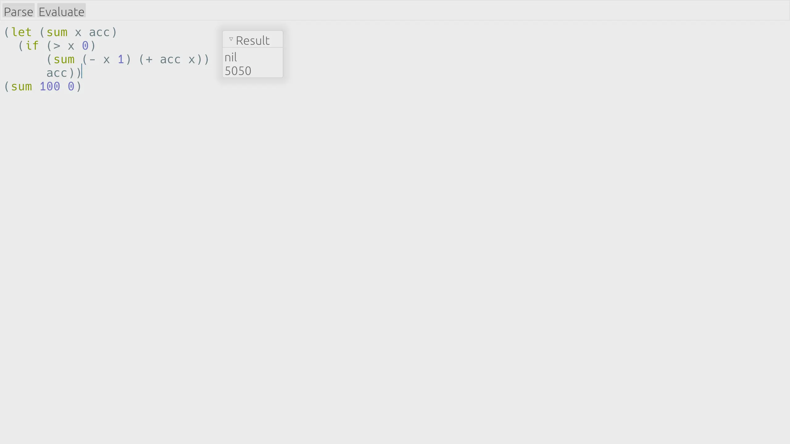

Free and open source. Quick from launch to every keystroke, with configuration powered by Lisp.
Native GUI and Rust powered performance, we as developers know what you need for an essential tool like a code editor. Write code with joy in Crispmacs.
GUI runs at a smooth 60 fps using Rust, no more waiting on launching the editor, and any lag on your keystroke will be treated as a bug and get fixed.
Crispmacs works on Linux, macOS, Windows and in the browser! This is all thanks to the egui crate.
Code Syntax Highlighting provided by the syntect crate ensures that syntax highlighting won't slow down the editor.